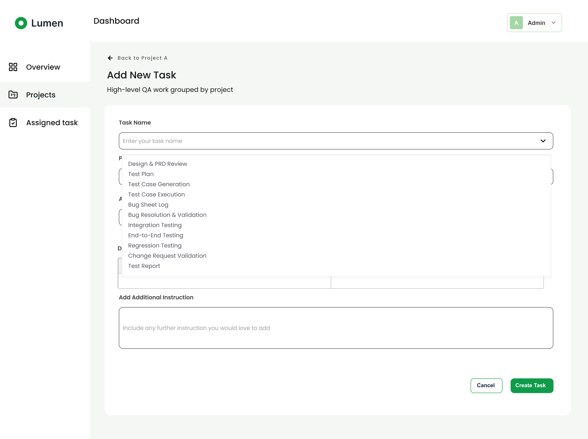
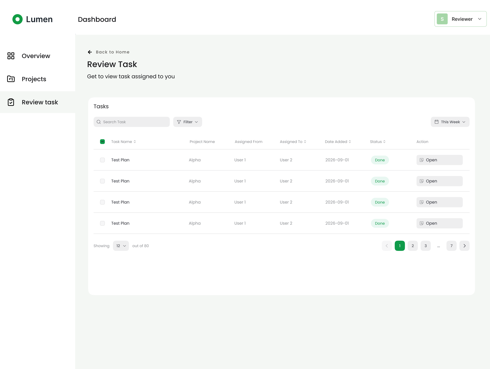
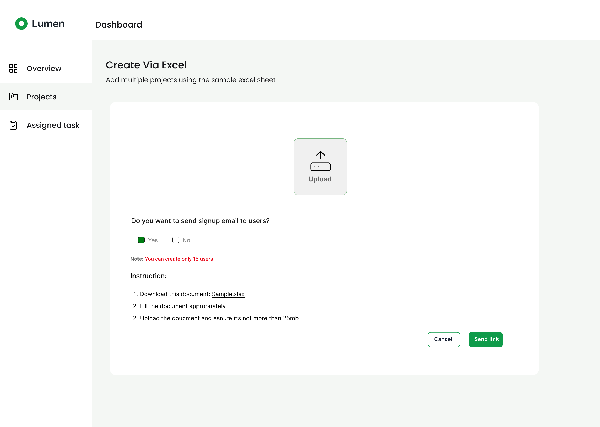

FIG. 01 — SOLE DESIGNER
A QA review platform where four roles each get one clear path.
I designed it as the only designer at Data Science Nigeria, turning a technical spec and PRD into flows each role can follow.
- Role
- Sole Product Designer
- Company
- Data Science Nigeria, remote
- Users
- Contributor, Reviewer, Super reviewer, Admin
- Input
- Technical spec and PRD

Sample data: company name, logo, project names, people and figures are replaced.
The challenge
Four kinds of user share the same tasks. Each needs to see and do only what their level allows, without the product feeling locked down.
- ContributorWorks on tasks
- ReviewerReviews tasks
- Super reviewerA higher review level
- AdminHolds critical actions
Role names are from the real product. Exact permissions are kept general here.
Process
From spec to screens, in five steps.
- UnderstandWorked through the technical spec and PRD, including the AI-model material, and broke it into plain steps a user would follow.
- AlignTook part in a design sprint with the key stakeholders, run by the Product and QA lead, who let me control the session. We reviewed the old workflow and the requirements together.
- DefineMapped the four roles and what each may do. Critical actions, such as deleting and creating users, went to the admin.Screens 1 and 3 →
- DesignTask creation and changes by role, an admin layer, a simpler Excel upload and a status that changes itself when all tasks are complete.Screens 2 and 4 →
- CheckHeld review meetings with stakeholders and the engineering team after the designs, and refined them before the build.
- Hand offWorked through the flows developers flagged as missing from the PRD, so nobody had to guess.Handoff →
What came out of it
Four screens, four decisions.
01 · From Define
The admin sees every project at a glance.
Before Critical actions, such as deleting items and creating users, could sit among everyday screens.
After One overview with status and filters, with the critical actions kept here for the admin.
Why Everyday screens stay simple, and the risky actions live in one place.

02 · From Design
Task types come from a fixed list.
Before Task names could be typed freely, so the same QA step might be named differently each time.
After Choose a task type from a fixed list instead of typing it.
Why QA steps are named the same way every time, with fewer typing errors.

03 · From Define
The reviewer gets a different menu and list.
Before One screen for every role would show actions a role cannot use.
After Same product, but the menu and task list follow the role.
Why People see only what they can act on.

04 · From Design
Many projects in one step.
Before Large sets of work were added one item at a time.
After Excel upload, with the file and user limits stated before the user hits an error.
Why Adding work in bulk is faster than one item at a time.
Select a screen to open it full size.
Developer handoff
Developers in the work from ideation to review.
- IdeationEarly, with engineers
I worked with the engineering team early, to understand what they meant to build before the screens were final.
- ImplementationNothing left to guess
Screens and flows in Figma, with status states shown (On track, In progress, Done). When developers flagged flows missing from the PRD, we worked through them together. Developers owned the build.
- Review and QAChecked against the design
Once screens were built, I held review meetings with the developers to compare them with the designs, suggest corrections and agree trade-offs where a technical limit applied, so differences in behaviour, states and wording were caught before release.
Lessons learned
What this project taught me.
- Check the spec before drawing. Gaps in the PRD surfaced only when developers read my flows. I now check a PRD for missing user needs first, using an AI-assisted pass.
- Design from roles, not screens. Deciding what each role may do first kept one product from becoming four.
- Keep risky actions apart. Critical actions behind the admin made everyday screens simpler and safer.
What I’d improve
Next steps, not yet done.
- Test with real users. Walk contributors and reviewers through the task flows and watch where they hesitate, as I now do earlier on other projects after KloFood.
- Document permissions in one place. One table of what each role can see and do, as a single source for handoff and future changes.
- Cover the rest of the states. Review empty, loading and error states across every role, and check against WCAG 2.1 AA.
The same thinking, taken to Android: permissions, denied and offline states. A self-initiated concept, not client work.
See the Android concept →